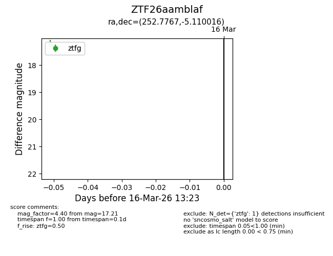
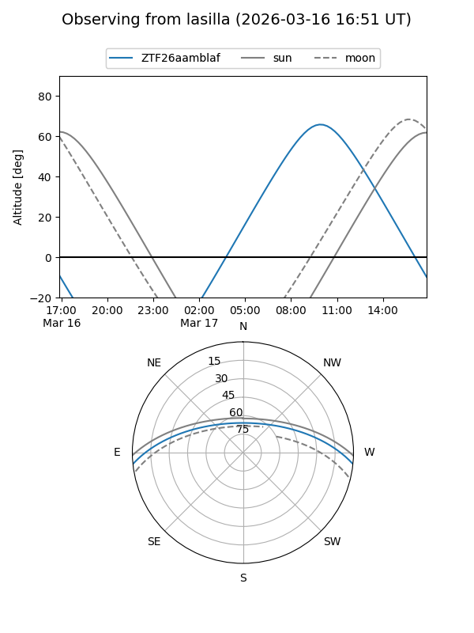
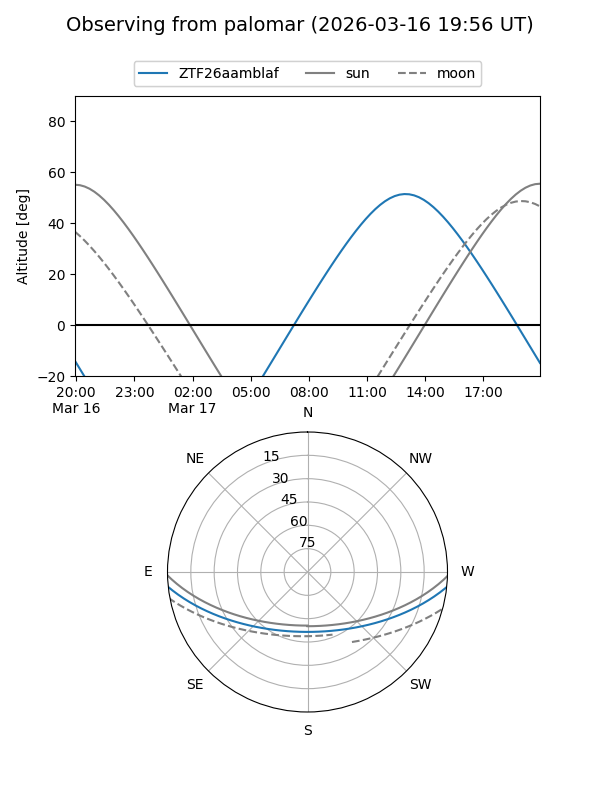

ZTF26aamblaf
Target ZTF26aamblaf at 2026-03-16 13:25
Aliases and brokers:
FINK: link
Lasair: link
ALeRCE: link
alt names
ZTF26aamblaf (ztf,fink_ztf)
Coordinates:
equatorial (ra, dec) = 252.7767,-5.11002
equatorial (HMS+DMS) = 16:51:06.40,-05:06:36.06
galactic (l, b) = (13.3302,+23.81100)
Flags:
Photometry:
last ztfg=17.21
1 ztfg detections
Lightcurve

Visibility


Additional plots